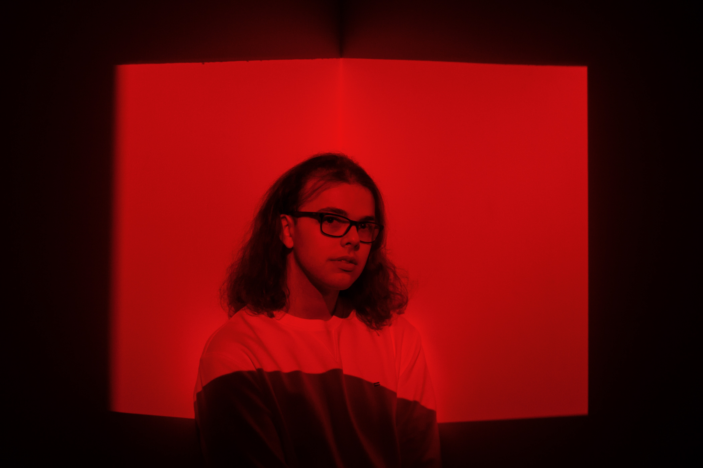

About the Team
Alexander Fisher

Major:
Digital Media, Arts, and Technology, B.A. from Penn State BehrendAbout me:
I am a highly involved student at Penn State Behrend. I serve as the Tech Director for Behrend’s Theatre Department. I'm passionate about film, theatre, and the arts, always striving to bring creativity and technical skills together. If you want to know more about me, check out my portfolio.Project contributions:
Researching and Resource Compilation, Python Scripting, Data Visualization
Ashlynn Allgeier

Major:
Digital Media, Arts, and Technology, B.A. from Penn State
BehrendAbout me:
I started college as a biology major with plans to go into veterinary medicine, but along the way I realized my real passion was in creativity and design. I ended up switching and now I am a DIGIT major! I love working on anything visual, from design to animation to photography. I am also working on starting up my own photography business, Ashlynn Allgeier Photography. Outside of school and work, you’ll usually find me with a camera in hand, hanging out with animals, or diving into a creative project. I also volunteer on the worship team as a vocalist at First Alliance Church. Whether I’m behind the camera or behind a mic, I love finding ways to share stories and connect with others.Project contributions:
Website Development, Data Visualization, XSLT
Michael Simons

Major:
Digital Media, Arts, and Technology, B.A. from Penn State
BehrendAbout me:
I put in two years toward a B.S. in Computer Science at Behrend, but I realized that wasn't allowing for the artistic creativity I wanted to put into my work. I grew up in Erie, PA, and most of my family lives here. Other than spending time with them, my main hobby is music. I'm in a local band, The Band 814, and I work part-time in the music ministry at my church, First Alliance Church. Project contributions:
Quality Control / File Management Specialist, Writer & Editor, XML Stack (XProc, ixml, XSLT)
Connor Carpenter

Major:
Digital Media, Arts, and Technology, B.A. from Penn State
BehrendAbout me:
I am a sophmore DIGIT student at Penn State Behrend, looking
to get a degree in graphic design. I've lived in Erie my whole life and
decided to attend Behrend because it's close to home, and a lot of my
family has gone here. I chose to be a DIGIT major because I've always
enjoyed working with computers and technology in general, and also like
to express my creativity. In my free time, I enjoy working out,
listening to music, playing basketball, spending time with my friends
and family, and playing games with my friends.Project contributions: